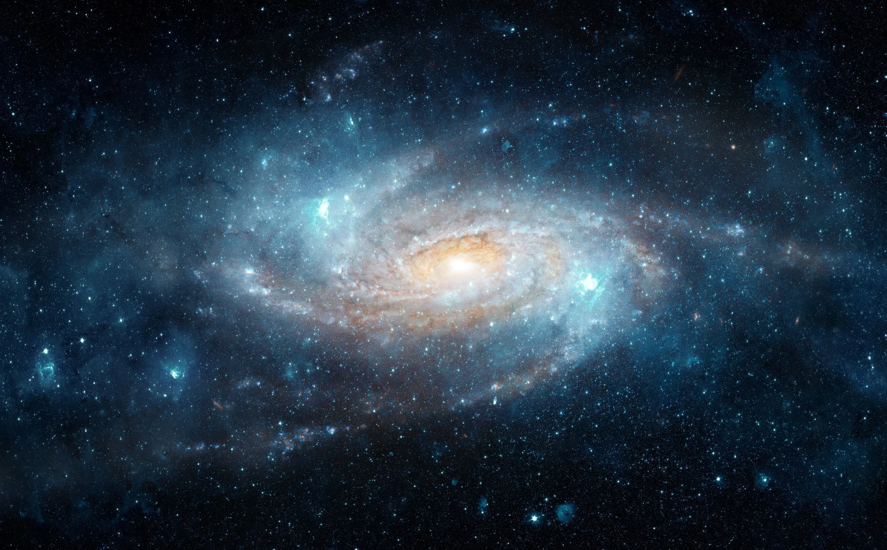
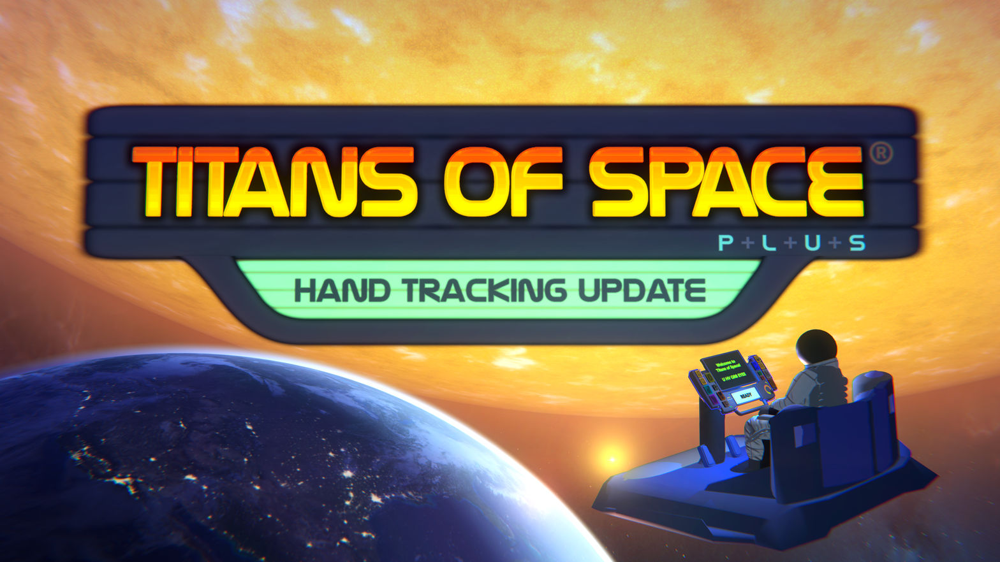
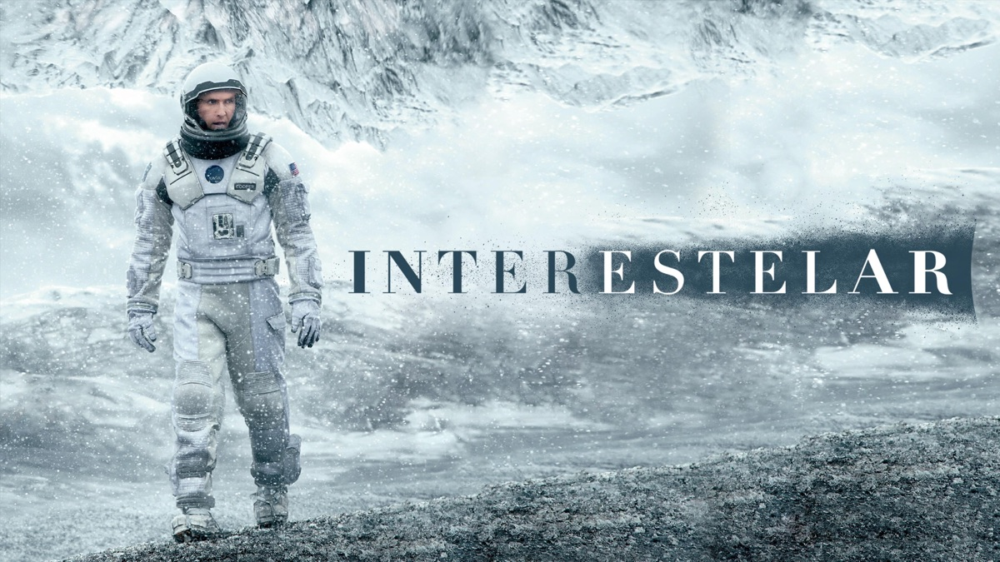
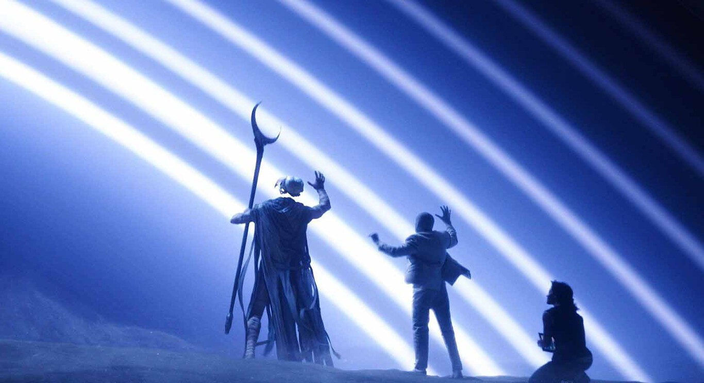
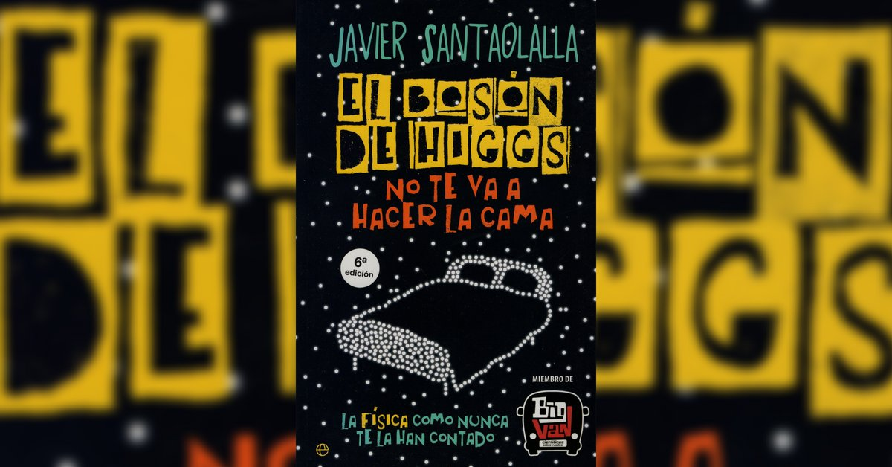

CODEX
COSMOS
LOG_001: El Origen de la Observación
"La luz es un registro fósil. En Chile, hemos desarrollado la tecnología para sintonizar fotones de hace 13.800 millones de años. No simulamos el Big Bang; lo observamos en tiempo real. Como Crononautas, nuestro deber es registrar el origen antes de que la entropía consuma los datos."
01_Concepto
Obra experimental de Realidad Virtual y Divulgación Científica de Alta Fidelidad. Una ventana tecnológica al pasado que permite al usuario testificar la evolución cronológica del cosmos.
Naturaleza del Proyecto
Instalación VR / Arte Digital Contemplativo

02_Descripción
Premisa General
El usuario se sitúa en el "Mirador del Tiempo", un entorno cuántico que traduce fotones antiguos en una experiencia inmersiva 360°, viendo el origen con ojos humanos.
Experiencia
Fomentar el Awe Effect (Efecto Perspectiva). Generar una contemplación profunda y un sentido de pequeñez absoluta frente a la escala y belleza del universo.
Objetivo Principal
Navegar de forma libre y contemplativa por el tejido del tiempo para materializar y registrar en el Códice los hitos fundamentales de la creación estelar.

03_Mecánicas
Crononavegación Gestual
El usuario no usa botones. Utilizando Hand-Tracking, "sujeta" el firmamento y tira de él para avanzar o retroceder en el tiempo. Es una conexión táctil directa con la historia del cosmos.
El Códice Holográfico
Dispositivo diegético que reacciona a la presencia del usuario. Despliega la información científica real de las estrellas sin romper la inmersión contemplativa del entorno.
04_Flujo de Experiencia
Ciclo Contemplativo
Al ser una obra experimental, no hay "Game Over". La retención se logra mediante la recompensa estética y la curiosidad intelectual continua.
- 1. SINTONIZAR: El usuario desplaza el firmamento libremente, buscando alineaciones visuales llamativas.
- 2. CONTEMPLAR: El tiempo se detiene en un hito (ej. el nacimiento de una nebulosa), inundando el espacio de luces y formas abstractas.
- 3. INTERNALIZAR: K-PLER provee contexto científico minimalista, anclando la belleza visual a datos de la realidad.
- 4. EXPANDIR: El Códice registra el hito, abriendo la posibilidad de viajar aún más atrás en el tiempo.


05_Narrativa
El Guardián de la Memoria
La inmensidad cósmica es demasiado pesada para la mente humana en soledad. Para acompañar este viaje, el usuario cuenta con **K-PLER**, una IA de Protocolo que actúa como intérprete. Inspirada en la sobriedad de GLaDOS, no da órdenes ni crea falsas urgencias; simplemente relata los eventos cósmicos con una frialdad poética.
ID_CORE: KEPLER_SOLO_DEV_2026
06_Estructura Espacial
Progresión Emocional: Un viaje que desintegra lo familiar para adentrarse en lo sublime.

Capas del Tiempo
- Capa 1 (Sistema Solar): Estabilidad visual, constelaciones ordenadas. Sensación de pertenencia.
- Capa 2 (Nacimiento Estelar): Cuerpos celestes erráticos, estallidos de color intenso y nebulosas envolventes.
- Capa 3 (Edad Oscura y Big Bang): Caos puro, ausencia de luz seguida del estallido visual final. Abstracción y sobrecarga sensorial controlada.
07_Estilo Visual
Sleek Sci-Fi & Minimalismo Diegético
Propuesta Artística: Se busca un contraste extremo entre la inmensidad oscura, profunda e hiperrealista del cosmos, frente a la tecnología humana: limpia, blanca, metálica y brillante (energía cian/magenta).
Interfaz (UI): Holográfica, delgada y no invasiva. Los datos proyectados por el Códice parecen cristal translúcido iluminado con neón para mantener la inmersión al 100%.
![[Image of Moodboard Visual]](assets/estilo_visual.png)
08_Público Objetivo
Exploradores VR
Usuarios que priorizan la inmersión y la contemplación estética por sobre el desafío lúdico.Aprendices Kinestésicos
Jóvenes que requieren visualizar y manipular el entorno físicamente para procesar la escala espacial.Docentes STEM
Educadores e instituciones chilenas que buscan vincular el currículo con la realidad astronómica nacional.Fans de Sci-Fi
Público que valora el "Hard Science" y la estética cinematográfica tipo *Interstellar*.09_Plataforma
Meta Quest 3 / 2 (Standalone VR)
La decisión de desarrollar para un dispositivo autónomo es intrínseca a la obra:
- Libertad Gestual: La inmersión requiere movimiento libre (Hand Tracking) para la navegación estelar sin la ruptura inmersiva que generan los cables de PC.
- Accesibilidad Espacial: Un sistema Standalone facilita la instalación de la obra en museos, ferias de ciencias y planetarios chilenos sin infraestructura técnica compleja.
10_Referentes

VR Escala: Titans of Space

Visual: Interstellar

Mecánica: Moon Knight

Divulgación: Santaolalla
11_Viabilidad
Acotación Estricta del Alcance (Scope)
Para garantizar un desarrollo realista durante el semestre, se construirá un entorno contemplativo funcional (El Mirador del Tiempo), testeando la interacción *Hand Tracking* del cielo y culminando en el prototipado visual del clímax (La Singularidad) mediante shaders optimizados.
Roles del Equipo (Solo Dev)
1. Desarrollo VR: Implementación del flujo de interacción y física de partículas.
2. Arte Técnico: Iluminación, *Skyboxes* reactivos y materiales PBR.
3. Experiencia Espacial: Diseño de la interfaz diegética (Códice) e integración científica.
Planificación Semestral
- Semanas 1-4: Definición Estética y GDDFINALIZADO
- Semanas 5-6: Prototipo Interacción VR BaseACTIVO
- Semanas 7-9: Desarrollo de Entorno y PartículasMAYO 2026
- Semanas 10-12: Integración K-PLER y CódiceJUNIO 2026
- Semanas 13-16: Testeo Contemplativo y EntregaJULIO 2026
12_Estado Actual
"El proyecto ha superado la fase de ideación de la obra. Actualmente en pre-producción activa, desarrollando modelado de assets de entorno y prototipando la manipulación inmersiva del motor de partículas para el Solemne 2."
SYSTEM_PROCESS: 30%_DEPLOYED
13_Propuesta de Valor
Sublime Científico
Combinar la belleza inmensa del arte digital interactivo con la rigurosidad de los datos astrofísicos reales (ESO/NASA).
Percepción Alterada
Lograr que el usuario internalice escalas de tiempo de miles de millones de años al sentirlas literalmente en sus manos.
Identidad Astronómica
Concebir en el Biobío una herramienta que dialogue con el hecho de que Chile es el laboratorio natural del universo.